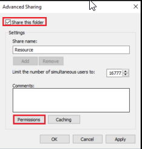

Creating Folder on Server (could be any) inside the C:\>
I called it Resources (adding a $ at the end makes it invisible)
right click > properties > Sharing Tab > Advanced Sharing


---------One Windows 10-----------


Assigning the folder a letter drive- > net use S: \\server1\resources /persistent:yes